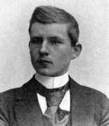

1877–1932
Swedish-American
Analysis, differential equations
Thomas Hakon Grönwall (later anglicised to Gronwall) was born in Dylta bruk, Sweden. He completed his doctorate at Uppsala in 1898 at the age of twenty-one, then worked as a civil engineer in Germany before emigrating to the United States in 1904. He held academic positions at Princeton and later joined the physics department at Columbia University in 1925.
Gronwall's mathematical output was remarkably broad. He published over a hundred papers in analysis, number theory, mathematical physics, and physical chemistry. His most lasting contribution to pure mathematics is the inequality that bears his name, proved in 1919: if a non-negative function $u$ satisfies an integral inequality of the form $u(t) \leq \alpha + \int \beta(s) u(s)\, ds$, then $u$ is bounded by the solution of the corresponding integral equation.
This result is the essential tool for converting integral inequalities into pointwise bounds. It is the engine behind uniqueness and continuous dependence results for ordinary differential equations: once you have a differential inequality, Gronwall turns it into an explicit bound. Richard Bellman independently rediscovered and generalised the result in 1943, so it is sometimes called the Gronwall–Bellman inequality.
Gronwall's work spanned pure and applied mathematics with unusual fluency. His number-theoretic result connecting the sum-of-divisors function to the Riemann hypothesis remains of interest to analytic number theorists. He also contributed to the mathematical foundations of quantum mechanics and thermodynamics. He died in New York in 1932, aged fifty-four, at the height of his scientific productivity.
| Phase | Page | Referenced for |
|---|---|---|
| Phase 8 | The Cauchy–Lipschitz Theorem | Gronwall's inequality used for uniqueness proof |
| Phase 8 | Gronwall's Inequality | Statement and proof (integral form and constant-$\beta$ form) |
| Phase 8 | Gronwall's Inequality | Applications: uniqueness, continuous dependence, blow-up bounds |
| Phase 8 | Gronwall's Inequality | Historical: proved 1919, Bellman rediscovered 1943 |
| Phase 8 | Stability and Lyapunov's Method | Gronwall applied to stability estimates |